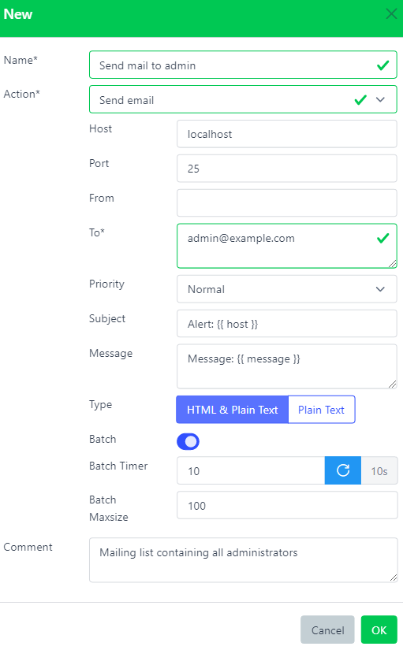
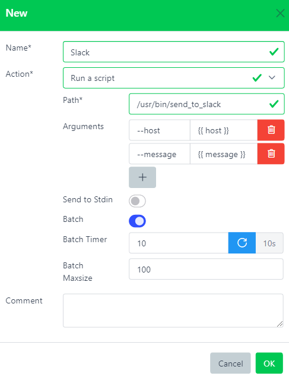
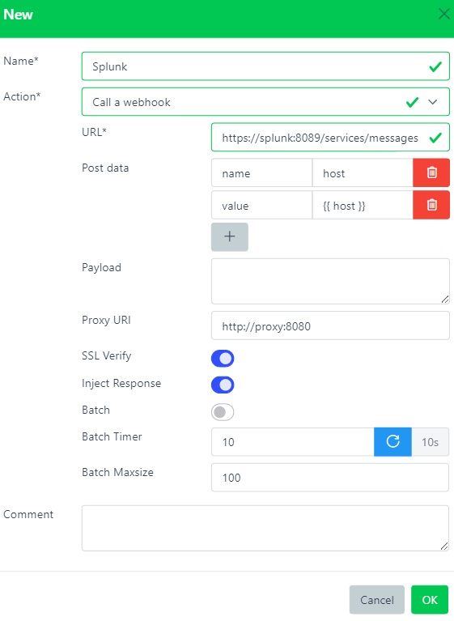

Actions (Alerting scripts)#
Architecture - Actions#
Overview#
Execute a command when called. Right now only Notifications can call an Action.
Internal Actions are already included in snooze-server package.
External Actions can be found and installed from Snooze Plugins Repository
Batching#
All actions have in common their last 3 parameters related to batching alerts. Indeed, if multiple alerts were to trigger the same action, they can be grouped into multiple bigger alerts before being sent.
By default batching is disabled for all actions.
For example, if 100 alerts were to originally send 100 mails, they can be batched into 10 bigger mails containing 10 alerts each. It makes sense to keep the number of sent mails low to avoid overloading internal mail servers so mails would not be delayed.
Batching currently supports 3 parameters:
- Batch (
false): Enable batching
- Batch_timer (
10): Number of seconds to wait before sending a batch
- Batch_maxsize (
100): Maximum batch size to send
Each time an alert triggers an action, it is being queued then it waits for batch_timer seconds.
If another alert is received before the timer expires, it resets it and adds it to the queue.
If the timer expires or the number of alerts in the queue is greater than batch_maxsize, the queue is flushed.
Jinja templates#
Most fields in action forms can make use of Jinja templates.
Internal Actions#
Mail#
Send a mail
- Host (
localhost): Mail server address.
- Port (
25): Mail server port.
- From (
''): Sender address. Can be empty.
- To (
'')*: Comma separated list of recipient addresses.
- Priority (
Normal): Email priority (from Lowest | Low | Normal | High | Highest).
- Subject (
Alert {{ host }}): Email subject. Can use Jinja templates.
- Message (
Message {{ message }}): Email content. Can use Jinja templates.
- Type (
html): Email formatting (from HTML & Plain Text | Plain Text).
Script#
Execute a script
- Script (
'')*: Fully qualified path of the script to execute.
- Arguments (
[]): List of arguments to provide to the script.
- Json (
No): Send the alert as JSON to the script Stdin.
Webhook#
Call a HTTP Webhook
- Url (
'')*: URL to send JSON payload via HTTP POST
- Params (
[]): List of POST data parameters
- Payload (
''): JSON or List to send
- Proxy (
''): Send the request through a proxy server
- Ssl_verify (
true): Verify SSL Certificate when using HTTPS
- Inject_response (
false): Inject HTTP Response to a field called reponse_{{webhook_name}} (Auto parse JSON)